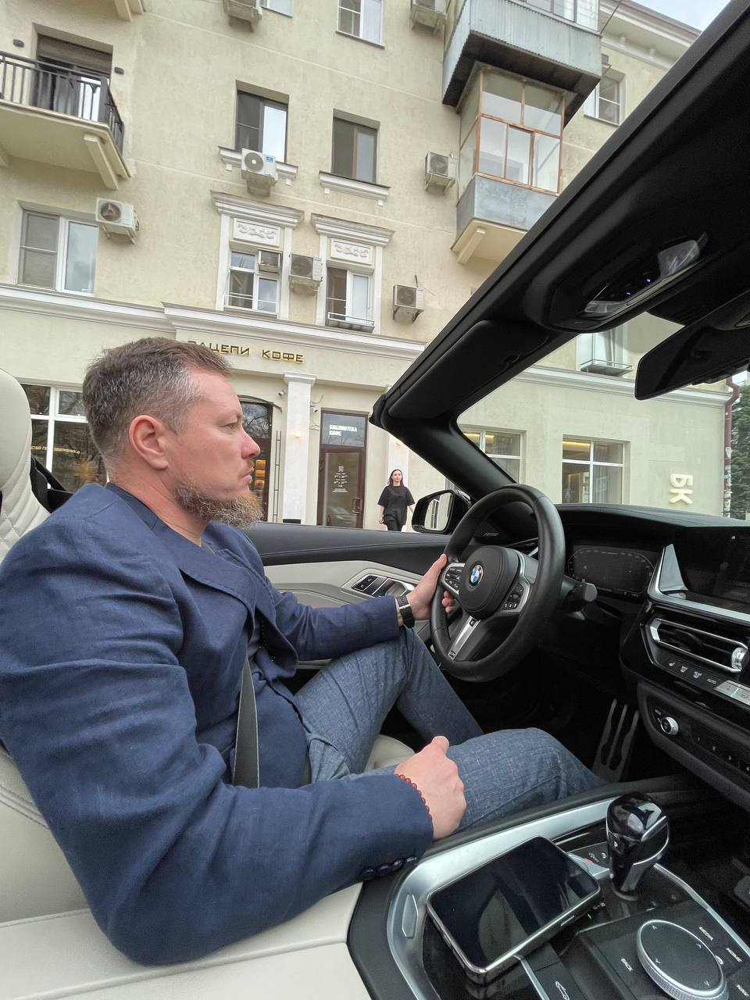

Краснодар
Дворницын
Евгений
Эксперт по недвижимости
Подбор квартиры в Краснодаре. Сначала район, потом цена.
Несколько адресов, у каждого своя причина быть в списке. Остальное не присылаю.
Подобрать квартируПять вопросов. Список обычно за день или два.
- Новостройка по цене застройщика. Вознаграждение уже внутри этой цены.
- Школа и сад считаются, только если они уже стоят.
- Платёж считаем до брони, от ставки, которую одобрят вам.
Четыре шага
-
01
Разбор
Формат, бюджет, район и срок. Этого достаточно, чтобы понять, что вообще имеет смысл смотреть.
-
02
Список
Три–семь адресов. У каждого плюс, минус и причина, почему он в списке.
-
03
Просмотр
На месте или онлайн: вид, шум, паркинг, этап стройки и что будет вокруг через два года.
-
04
Сделка
Ипотека, договор, приёмка. Новое условие вы узнаёте до подписи, не в день сделки.
До того, как отдавать деньги
-
Плотность
На рендере двор широкий. В проекте корпуса часто стоят вплотную, а машиномест не хватает уже ко второй очереди.
-
Студии под аренду
Дом, проданный инвесторам, живёт иначе: шум, текучка, узкие планировки. Для семьи это редко удачный вариант.
-
Инфраструктура
Школа в буклете часто значит «в проекте». Отделяю то, что уже построено, от того, что только обещано.
-
Ставка
В рекламе платёж считают от акционной ставки. Я считаю от той, которую банк одобрит вам, и от полной цены квартиры.
Районы, коротко
Юбилейный Семейный район между центром и востоком: школа и сад уже работают, новостроек мало.
Цену держит вторичка. Дворы 2000-х плотные, вечером машин больше, чем мест. Имеет смысл, если школа нужна в этом сентябре, и стоит заранее посмотреть выезд на Тургенева.
Фестивальный Новые метры на востоке, обычно спокойнее по цене, чем Юбилейный.
Корпуса высокие, между очередями ещё стройка, окна часто смотрят в соседний дом. Школу и паркинг смотрю в проекте: место на квартиру часто меньше одного. Подходит, если готовы два-три года жить рядом со стройкой.
Гидростроителей Живой район: магазины, поликлиника, школы, не картинка с рендера.
В основном вторичка и редкая точечная застройка, двор, где уже живут. В центр едут через Тургенева и Уральскую, в час пик это отдельное решение. Точечный дом во взрослом дворе шумит сильнее, чем стройка в поле.
Центральный Адрес у Красной, если нужен именно центр.
Новостроек мало, цену держит место, не ширина двора. Здесь важнее парковка и состояние дома, чем фотография в объявлении. Имеет смысл, когда центр вам дороже нового подъезда и своего паркинга.
Музыкальный Молодой восточный массив, вход обычно спокойнее Фестивального.
Имеет смысл, если горизонт жизни здесь от трёх лет и сад может появиться не в первый сезон. Сначала считаю дорогу в час пик и срок инфраструктуры, не метраж по акции.
Комсомольский Между центром и западом, когда Юбилейный не проходит по бюджету, а в край уезжать не хочется.
Застройка смешанная. Решает конкретный двор и выезд: район сам по себе ничего не обещает, дом может подойти.
Западный обход Ниже чек, чем у парка и Юбилейного, если утро в центр не каждый день.
Вокруг часто ещё стройка. Дешевле на входе не значит проще продать через несколько лет. Это лучше обсудить до сделки.
Пашковский Свой ритм и дорога к аэропорту.
Кому-то удобный выезд, кому-то шум полосы. Это решается до просмотра. Как «почти центр» его не предлагаю.
Как работаю

- Сделку веду сам, без смены дежурных.
- Район смотрю на месте: подъезд вечером, парковка, то, что реально за окном.
- Застройщиков сравниваю по сроку, эскроу и отделке в договоре.
- На вторичке документы и перепланировки проверяю до аванса.
- Бронь предлагаю, когда адрес уже выбран, а не потому что «завтра подорожает».
Задача
Расскажите, что ищете. Список соберу по ответам.
Пять вопросов, без длинной анкеты. Обычно этого хватает, чтобы отсечь лишнее и оставить несколько адресов.
Вопросы
Сколько стоят услуги?
По новостройке вы платите цену застройщика: вознаграждение агента обычно уже заложено в неё и не прибавляется сверху. На вторичке комиссия называется в начале и пишется в договоре.
Только новостройки?
Нет. Новостройки беру чаще: там больше выбора и проще сравнить срок и отделку. Вторичку Юбилейного, Гидростроя, Центрального и сценарий «продать своё — купить другое» тоже веду, если объект в Краснодаре или крае.
Можно подобрать, если я не в городе?
Да. Разбор, список и онлайн-показ закрывают большую часть решения: вид, этап стройки, двор, дорога. На сделку и приёмку либо приезжаете вы, либо оформляем доверенность. Это решаем заранее.
Какой район семье с ребёнком?
Сначала школа и сад, которые уже работают, и дорога до работы в час пик. Часто это Юбилейный, часть Гидростроя или готовый квартал Фестивального. Музыкальный и западные массивы рассматриваю, только если срок инфраструктуры вам подходит.
Зачем риелтор, если можно к застройщику?
Отдел продаж показывает свой дом и свой платёж. Я сравниваю несколько площадок: плотность, паркинг, школу и ставку, которая вам положена. Цена квартиры при этом обычно та же.
Семейная ипотека и рассрочка выгодны?
Иногда да, но не в том виде, как на баннере. Семейная ипотека есть не на каждый корпус и почти не бывает на вторичке. Рассрочка не скидка: квартира часто дороже, а остаток в конце всё равно нужно закрыть одобренной ипотекой. Сначала ставка, потом бронь.
Как быстро будет список?
Обычно один-два дня после разбора. Если бюджет на границе района или запрос очень узкий, сразу скажу, что выбор небольшой.
Политика обработки данных
Оператор: Евгений Дворницын, Краснодар. Сайт собирает заявку на подбор недвижимости: имя, телефон, удобный канал связи и ответы о задаче, формате, бюджете, районе и сроке.
Цель — связаться с вами по этой заявке и подготовить подбор. Номер не используется для рассылок и не передаётся застройщикам без вашего отдельного согласия.
Основание — ваше согласие, которое вы ставите в форме. Согласие можно отозвать, написав на тот же телефон или в мессенджер, с которого оставили заявку.
Данные хранятся, пока идёт подбор и оформление сделки, и удаляются по запросу. До подключения серверной формы заявка дополнительно остаётся в браузере, с которого её отправили.